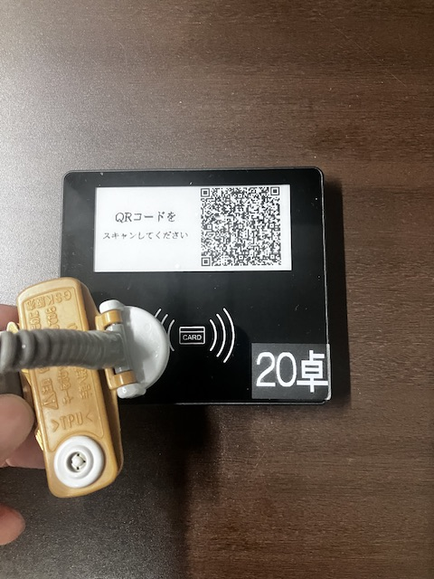

请使用座位上的终端点餐
Please order from the device at your table
こちらの注文口ではなく、
テーブルの端末からスマートフォンでご注文ください。
请勿在此柜台点餐，请通过座位上的终端用手机点餐。
Please do not order here. Use your smartphone with the device at your table.
ご不明な点はお気軽にスタッフへお声がけください。 如有不明之处，请随时联系工作人员。 If you need help, please feel free to ask our staff.
